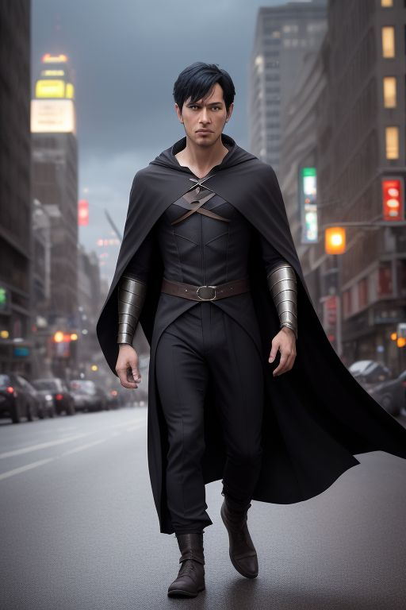

Árnylépő Az Árnyak Gyermeke
Eredettörténet:
Levente mindig is különös kapcsolatban állt az éjszakával. Már kisgyermekként is akkor érezte magát leginkább otthon, amikor mások féltek: amikor eljött a sötétség. Szülei egy régi budapesti könyvkereskedést vezettek, ahol a fiú rengeteg időt töltött régi, elfeledett könyvek társaságában. Egy napon egy ismeretlen alak hozott be egy sötét, bőrbe kötött könyvet címe nem volt, és lapjai is szinte elnyelték a fényt. Levente véletlenül olvasott fel belőle egy mondatot, mire a könyv fekete füstté vált, és egy árnyszerű lény tört elő belőle. A lény azonban nem pusztítani akart hanem menedéket. Megkötött egy különös „paktumot” a fiúval: **védeni fogja őt**, ha cserébe Levente segít helyreállítani az egyensúlyt az Árnyvilág és az emberi világ között. Innentől kezdve Levente már nem volt teljesen ember: **ő lett Árnylépő** az egyetlen, aki szabadon mozoghat az árnyak között.Eredettörténet
Valódi neve: Levente Varga Születési hely: Budapest, Magyarország Kor: 27 Képességei: teleportálás árnyékokon keresztül, láthatatlanság sötétben, „árnyszeletelés” (az árnyékából képes pengeformájú energiát létrehozni)Személyisége:
Csendes, figyelmes, gyakran filozofikus gondolkodású. Nem bízik könnyen másokban, de ha egyszer valakit közel enged, hűséges társ. Gyakran küzd saját sötét oldalával az Árnylény néha megpróbálja átvenni az irányítást, ha túl sokat használja az erejét.Motivációja:
Nem a hősiesség vezeti, hanem a kötelesség tudja, hogy a hatalma veszélyes, és ha nem tanulja meg uralni, akár világokat is képes lehet megnyitni a sötétség előtt. Azon dolgozik, hogy megértse a saját természetét és visszazárja azt, amit egyszer véletlenül kiszabadított.Képességek részletesen:
Teleportálás árnyékon keresztül: bármely két sötét pont között képes átlépni de csak ha nincs közvetlen fény közöttük. Láthatatlanság: teljesen láthatatlanná válik mély sötétségben. Árnyfegyverek: képes penge- és láncszerű formákba sűríteni az árnyékenergiát, amit közelharcban használ. Érzékelés: a sötétben látja a hőt és mozgást, de túl sok inger torzíthatja a valóságérzékét. Hátrány: ha túl sokáig marad az Árnyvilág hatása alatt, a személyisége elkezd torzulni és Umbral egyre erősebben próbál előtörni.